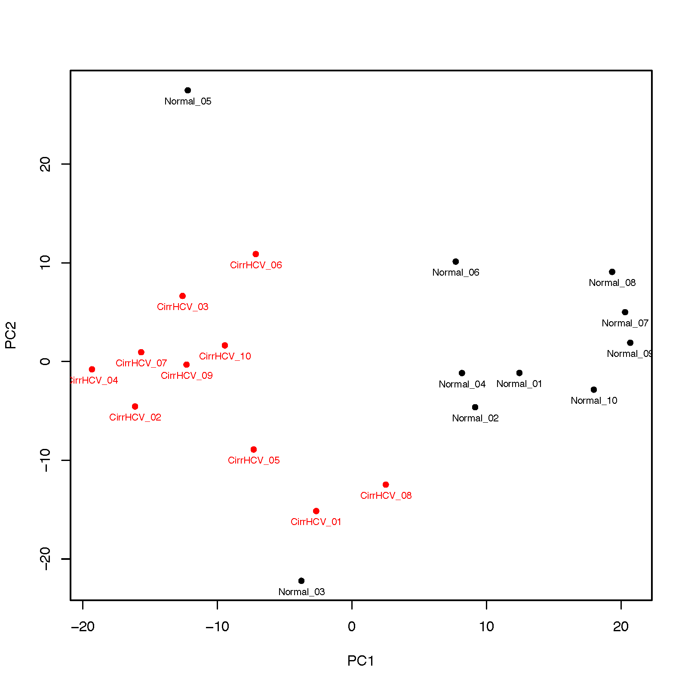

10. beta_PCA
10.1. Overview
beta_PCA performs principal component analysis (PCA) on DNA methylation
Beta-value matrices to visualize relationships among samples.
The input matrix must have CpGs in rows and samples in columns. CpGs containing missing values across the samples used for PCA are removed. By default, CpG values are standardized before PCA.
10.2. Input Files
10.2.1. Beta matrix
The first column contains CpG IDs and the remaining columns contain sample Beta-values. Common delimiters and compressed input are supported.
Example:
CpG_ID Sample_01 Sample_02 Sample_03 Sample_04
cg_001 0.831035 0.878022 0.794427 0.880911
cg_002 0.249544 0.209949 0.234294 0.236680
cg_003 0.845065 0.843957 0.840184 0.824286
At least two sample columns are required. Duplicate CpG IDs are reduced to the first occurrence, whereas sample IDs must be unique.
10.2.2. Group file
A two-column sample/group file is required. Comma- and tab-delimited files are supported, with or without a header.
Example:
Sample,Group
Sample_01,normal
Sample_02,normal
Sample_03,tumor
Sample_04,tumor
Samples present in the Beta matrix but absent from the group file are excluded with a warning. At least two samples must be shared between the two files.
10.3. Usage
Basic usage:
beta_PCA \
-i cirrHCV_vs_normal.data.tsv \
-g cirrHCV_vs_normal.grp.csv \
-o HCV_vs_normal
Useful options include:
-n,--n_components,--ncomponent– number of principal components to calculate (default: 2)-l,--label– add sample IDs to the plot-c,--marker– plot marker:o,.,^,s,D, orx(default:o)-a,--alpha– point opacity between 0 and 1 (default: 0.7)--legend_location– legend position (default:best)--loading– write the PCA loading matrix--no_standardize– skip CpG standardization before PCA--width/--height– plot size in inches (default: 8 x 8)--dpi– plot resolution (default: 300)-o,--out_prefix,--output– output prefix
Display all options with:
beta_PCA -h
10.4. Output
For output prefix HCV_vs_normal, the command writes:
HCV_vs_normal.PCA.tsv– PCA scores for each sampleHCV_vs_normal.PCA_variance.tsv– explained and cumulative variance for each componentHCV_vs_normal.PCA.png– PCA scatter plot
When --loading is used, it also writes:
HCV_vs_normal.PCA_loadings.tsv– CpG loading matrix
The variance explained by each component is also reported to the log.
10.5. Example Data
10.6. Example Figure
{kind=link}
